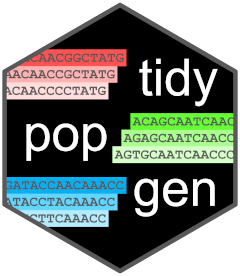

Check the sex of individuals from their sex chromosomes
Source:R/indiv_sex_check.R
indiv_sex_check.RdEstimate the sex of each individual from the inbreeding coefficient F of
its X chromosome (optionally also using the number of its genotypes on the
Y chromosome), and compare it with the sex recorded in the sex column of
the gen_tibble, as PLINK 1.9's --check-sex.
Usage
indiv_sex_check(
.x,
max_female_xf = 0.2,
min_male_xf = 0.8,
ycount = FALSE,
max_female_ycount = 0,
min_male_ycount = 0,
...
)Arguments
- .x
a
gen_tibble; if it has a columnsex(e.g. as read from a PLINK .fam file), the sex of each individual is checked against it. Thesexcolumn can be a factor or a character vector ("female" and "male", or "F" and "M"), or PLINK's codes (2 for females, 1 for males, 0 for unknown).- max_female_xf
the largest F of a female (0.2 by default, as in PLINK 1.9).
- min_male_xf
the smallest F of a male (0.8 by default, as in PLINK 1.9).
- ycount
boolean, whether to also use the number of genotypes on the Y chromosome (as PLINK 1.9's
--check-sex ycount).- max_female_ycount
the largest number of genotypes on Y of a female (with
ycount = TRUE; 0 by default, as in PLINK 1.9).- min_male_ycount
the smallest number of genotypes on Y of a male (with
ycount = TRUE; 0 by default, as in PLINK 1.9).- ...
currently unused.
Value
a tibble with one row per individual (in the order of .x) and
the columns of PLINK's .sexcheck file: id; sex, the recorded sex (a
factor with levels "female" and "male"; NA if unknown, or if .x has no
sex column); snp_sex, the sex estimated from the genotypes; status,
"OK" if the recorded and estimated sexes are known and the same, and
"PROBLEM" otherwise; f, the F of the X chromosome (NaN without
genotypes on X); and, with ycount = TRUE, y_count, the number of
genotypes on Y that are not missing.
Details
Males have a single X chromosome, so their genotypes on X are
homozygous (stored as homozygotes, as in PLINK), and their F on X is
close to 1; females have two, and an F close to 0. F is computed as in
PLINK 1.9 (--check-sex, the same F as --het): for each individual,
F = (O - E) / (N - E), where N is the number of loci on X at which it is
genotyped, O the number of those at which it is homozygous, and E the
number expected under Hardy-Weinberg equilibrium (the sum of 1 - 2pq over
those loci, where p is the frequency of the alternate allele, without a
small-sample correction). Loci that are monomorphic (or with no
genotypes) are not used. Allele frequencies are computed as PLINK 1.9
computes them on the X chromosome: from the founders (individuals with
no known parent in the columns paternal_ID and maternal_ID, if
present), counting one allele for each male (whose heterozygous
genotypes are missing) and two for each other individual.
An individual is male if F is larger than min_male_xf, and female if F
is smaller than max_female_xf; otherwise (or if it has no genotype on
X), its sex is unknown (NA). With ycount = TRUE, the number of its
genotypes (that are not missing) on the Y chromosome must also be at
least min_male_ycount for a male, and at most max_female_ycount for a
female, as PLINK 1.9's --check-sex ycount. Only loci of type "X" and
"Y" are used: loci in the pseudo-autosomal regions should be declared as
such (see gt_set_chromosome_types()), as with PLINK's --split-x.
In ZW systems (e.g. birds), females are the heterogametic sex: Z and W take the place of X and Y, and a high F on Z means a female (the thresholds named after males then apply to females, and vice versa).
The chromosomes must be recognised as sex chromosomes from their names,
or declared with gt_set_chromosome_types() (e.g. PLINK's numeric codes,
with chr_set = "human").
References
Purcell S, Neale B, Todd-Brown K, Thomas L, Ferreira MAR, Bender D, Maller J, Sklar P, de Bakker PIW, Daly MJ, Sham PC (2007) PLINK: a tool set for whole-genome association and population-based linkage analyses. American Journal of Human Genetics, 81(3), 559-575. doi:10.1086/519795
Examples
# three females and two males (hemizygous on X, so homozygous), with
# five loci on the X chromosome; the last individual is recorded as a
# female, but its genotypes are those of a male
x_genotypes <- rbind(
c(1, 0, 2, 1, 1),
c(0, 1, 1, 2, 1),
c(1, 1, 0, 1, 2),
c(2, 0, 2, 0, 2),
c(0, 2, 0, 2, 0)
)
x_loci <- data.frame(
name = paste0("x", 1:5), chromosome = "X", position = 1:5 * 1000,
genetic_dist = 0, allele_ref = "A", allele_alt = "G"
)
example_gt <- gen_tibble(x_genotypes,
loci = x_loci,
indiv_meta = data.frame(
id = paste0("ind", 1:5),
sex = c("female", "female", "female", "male", "female")
),
backingfile = tempfile("sex_check_"),
quiet = TRUE
)
indiv_sex_check(example_gt)
#> # A tibble: 5 × 5
#> id sex snp_sex status f
#> <chr> <fct> <fct> <chr> <dbl>
#> 1 ind1 female female OK -0.266
#> 2 ind2 female female OK -0.266
#> 3 ind3 female female OK -0.266
#> 4 ind4 male male OK 1
#> 5 ind5 female male PROBLEM 1